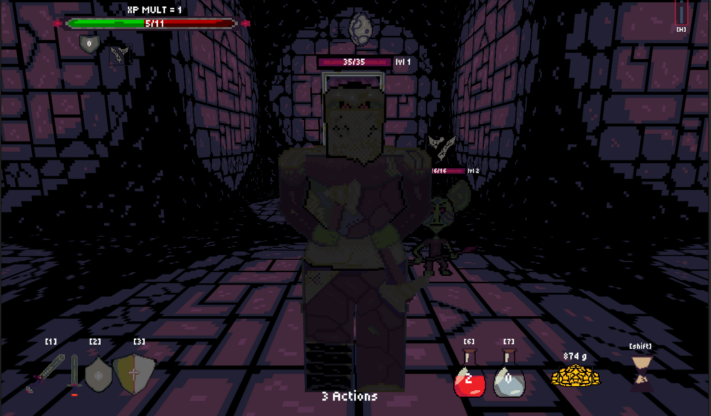
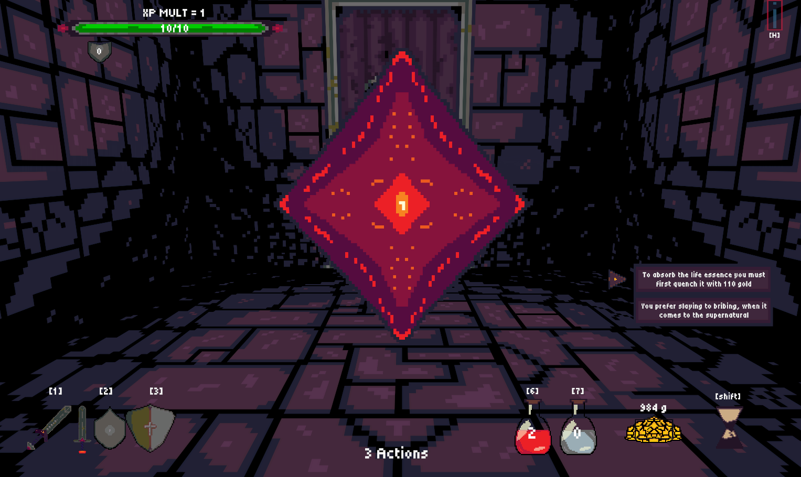

Dungeon Dive
Dungeon Dive is a turn based combat dungeon crawl with procedurally gnerated content. The idea behind the game is based on the assumption that there are two popular types of turn based combat games in the modern scene, party based systems (Baldurs gate, Dragon quest , Bards tale IV, Darkest Dungeon, among others), and deck builders (Slay the spire, Die in the dungeon, Across the Obelisk, amongst others). A lot of the time when playing a single character turn based combat game, the combat is often a bit simplistic, or the combat is based in an arena where movement is a large part of the system. Dungeon Dive is an attempt at creating a single character turn based combat game, where movement is fixed during combat, but the inherent actions available to the player, combines with the actions of the enemies to create a complex turn based dynamic.

Outside of combat the game is controlled with grid-based movement, where each grid of movement is a room in the dungeon. If there are more than one rooms, the player can choose to turn towards the different rooms, and move into the chosen room. This design decision is based on a mix of design elements, seen in older games, where movement is grid based. as well as newer roguelites, where it is commmon for the player to plan a route through an overworld map, choosing the types of encounter the player wishes to go through. In Dungeon Dive the intention was that the player should feel as if they were dungeoncrawling, and thus an overworld objectifying view of the player progression, was thought to interfere with the immersion.

Progressing through the dungeon the player fights different groups of monsters granting experience gold and items, and encounters dungeon-objects or "events" that can give gold, items or potions, or require sacrifices to bestow boni onto the player. Items modify the player's stats, abilities and grant new abilities, thus allowing the player to create different builds.